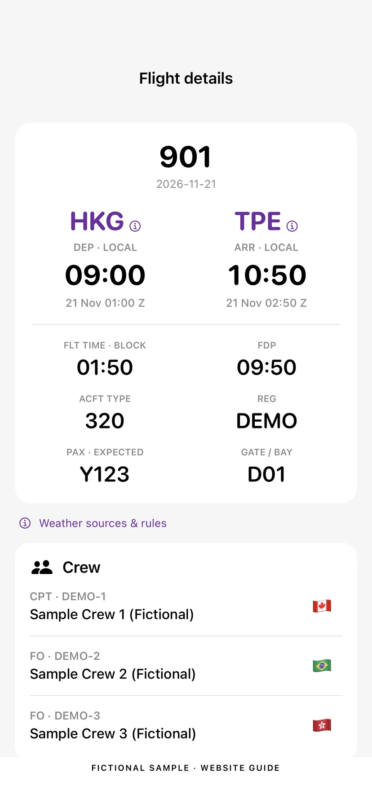
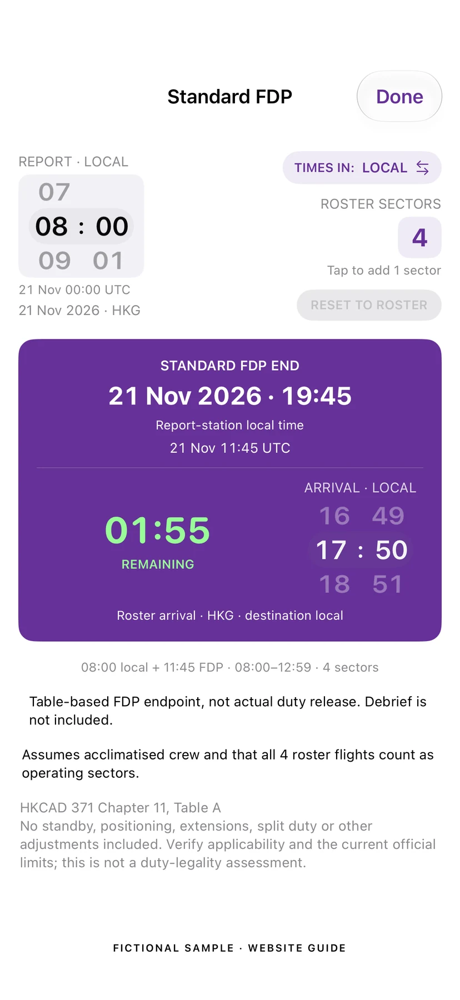
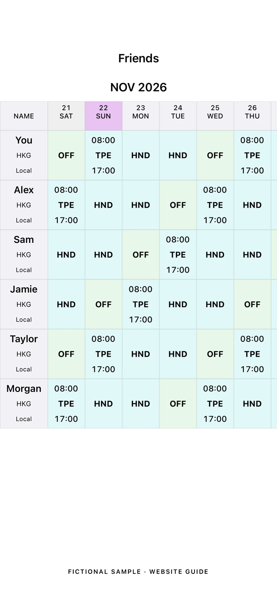
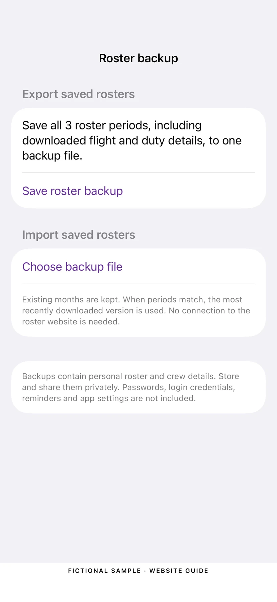
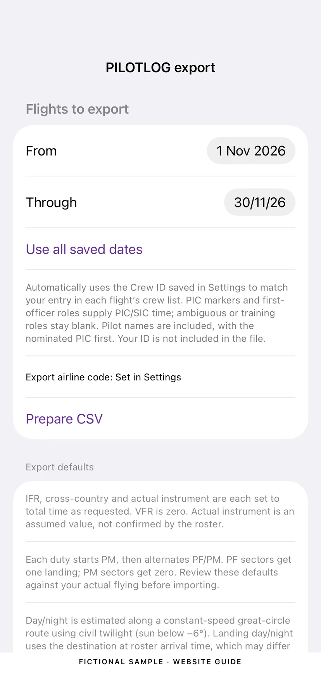
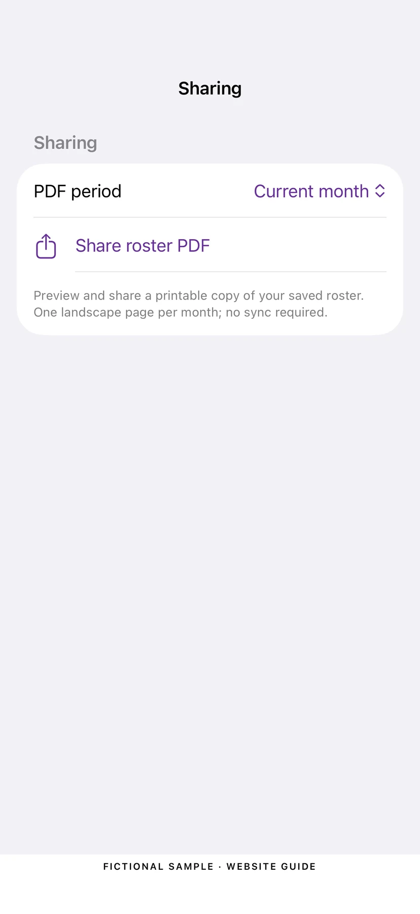
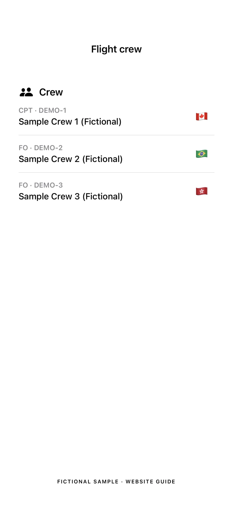

App guide
Help & gestures
Version 1.0 (17) guide · updated 23 November 2026
Annotated screenshots explain where to tap, how to gesture and what each feature does. All examples use fictional data. Open Settings → Help & gestures for the offline illustrated guide. Build 17 adds weather archives and forecasts, optional weather-only background refresh, statistics and projections, pinned comparison summaries, per-day sizing and a more compact layout.
First launch and sign-in
Connect once, then download
Fictional sample · Select a numbered pointer to highlight its explanation.

- Your website
Enter your own authorized roster website address, followed by Crew ID and password.
- Save and Sync
Save the credentials securely and download using Sync Preferences. Keep the app open.
- Try it first
Open Settings → Open demo to explore without entering credentials.
Read and accept the usage notices. Enter your authorized HTTPS roster website address, Crew ID and password, then choose Save and Sync. Authenticate with Face ID, Touch ID or your device passcode. Keep the app open and online while the progress bar completes. The app opens My Schedule and saves the requested months.
Credentials are stored in the device-only Keychain. After saving the requested rosters, the app attempts website logout and clears the temporary session. A failed or interrupted sync may offer Resume or Open Connection. Inspect any website verification or warning there; do not repeatedly retry rejected credentials.
To explore without an account, open Settings → Open demo. Fictional samples do not overwrite your personal saved rosters.
The fictional demo includes a four-sector duty on today’s day number. Rotate between portrait and landscape to compare busy and ordinary columns. In landscape, rotate back to portrait to access demo controls.
Opening the app and switching back
Your saved roster comes first
Fictional sample · Select a numbered pointer to highlight its explanation.

- Saved opening months
Opening a saved roster does not require another website login. Remaining history loads afterward.
- Return where you left off
Switching back on the same day preserves the roster and scroll position. The privacy cover clears as the app returns.
When saved rosters are available, the app prioritizes the opening months so you can see the roster sooner. Remaining saved history loads afterward in the background. Older months are preserved; Saved Rosters becomes available when history loading finishes. Older archive formats may need a full initial load.
Opening saved rosters does not require a new website login or download. You can view saved data offline. Pull down to sync when you want to check for changes; online weather, ATIS and Friends updates still require a connection.
When returning from another app on the same day, the roster keeps its displayed data and scroll position. It does not rebuild unchanged roster and Friends data just because you switched apps. Secondary processing runs after the roster is visible. If the calendar day has changed, date-dependent views refresh and the opening-at-today preference is applied where relevant.
The eRoster locked cover hides the main roster when the app becomes inactive or enters the background. It clears promptly as the app returns to the foreground. This is a privacy cover, not a request to sign in again or enter a passcode.
Friends retains its one-check-per-app-launch behavior; switching away and back does not request another completed check. Use Refresh in Friends when you want a fresh check. Keep the app open during a roster download: sending it to the background cancels an active sync while preserving saved rosters.
Gestures and shortcuts
Practice the matrix gestures
Fictional sample · Select a numbered pointer to highlight its explanation.
- Swipe ↔
Drag horizontally across the matrix to browse dates. Rotate to landscape for more columns.
- Pinch and pan
Use two fingers to magnify and move around—even over flight links. Release to snap back.
- Double-tap
Double-tap the matrix to bring today to the left edge, if today is saved.
- Pull ↓ and release
Pull firmly until “Release to sync” appears. Let go early to cancel; the roster follows your pull.
Swipe horizontally: browse days in the main roster. Rotate: keep the visible date while showing more columns in landscape. Main controls are available in portrait; the month heading stays visible in both orientations.
Pinch with two fingers: temporarily magnify the matrix, including over flight links. Pan with two fingers while zoomed to inspect another part. Release to snap back. A single tap still opens a link. Use this gesture to read tiny hotel names, gate numbers, aircraft registrations and actual-time A markers.
Double-tap the main matrix: return to today at the left edge, when today is available in saved rosters.
Pull the main roster down firmly until Release to sync appears, then release. The roster moves with your gesture. Release before the threshold to cancel. Sync uses Settings → Sync Preferences.
Tap a flight number: open its details. Swipe between flight detail pages: move only between flights in that duty. Tap a purple report time: open the Standard FDP dialog. Tap an airport code in flight details: open its compact airport card.
In Friends, scroll horizontally through dates and vertically through people. Names, date headings and your own roster row stay pinned. Tap dates to highlight multiple columns across all friends; tap any highlighted date again to clear only that column. Tap a name to edit its local nickname. Clear it and tap outside or Done to restore the original name.
Reading the roster and toolbar
Toolbar and day-column shortcuts
Fictional sample · Select a numbered pointer to highlight its explanation.
- Bell · history · information
The three left buttons open reminders, Saved Rosters and period information.
- Friends and Settings
The two right buttons open Friends and Settings. Return to portrait to see the toolbar.
- Purple report time
Tap 0800 to open the duty’s Standard FDP scenario.
- Blue flight number
Tap 901 for flight details; swipe there to the next flight in the same duty.
- Turnaround
(0055) means a 55-minute gap between these flights.
- Daily flight time
04:00 combines complete operating sectors arriving on this date. Monthly hours appear in the blue heading.
Date cells show the day and weekday. The month and year above follow the leftmost date. The main roster shows the visible month’s flight-hour total. Today is highlighted and past date headers are shaded.
Busy days resize only their own column to fit all sectors; neighbouring days retain their usual size. Landscape hides the status footer and report countdown to leave more height for the matrix. In portrait, Last synced above the matrix identifies when the displayed roster was saved, in device-local time. Weather refresh does not change this timestamp. The portrait status and countdown use a compact layout.
Compact detail labels (build 16 onward): when saved flight details are available, the gate for the first flight of the duty appears directly below report time. Each flight’s aircraft registration appears directly below its [aircraft type]. Both use the same tiny font as hotel names. Missing or dash-only values leave the layout blank, without a placeholder or extra caption space.
Layover hotel names wrap onto multiple lines and expand vertically. The matrix shows only the name before the first slash and removes a leading “Rest” label, when present. Tiny text keeps the day columns compact; pinch to zoom and use two fingers to pan when you want to read it. The original saved duty data and detail page remain unchanged.
Actual times retain the roster’s leading A marker, but only the A uses the tiny font. The time digits keep their usual size: for example, A0907 means the source marks 09:07 as actual. This display does not independently verify the time. Other time prefixes retain their existing appearance.
Gate and aircraft registration reflect the last roster sync, just like flight details. Sync again for newer source data near departure; refreshing weather does not refresh these labels. Existing screenshots may show the earlier matrix without these compact labels.
When a destination forecast is available for a future flight, or a saved pre-departure forecast exists for a departed flight, a tiny coloured sky icon, thermometer and Celsius temperature appear once below its turnaround time, or below aircraft registration (aircraft type if registration is missing) if no turnaround follows. For HKG–TPE–HKG, TPE’s arrival forecast is below the turnaround and HKG’s arrival forecast below the return sector’s aircraft registration. Pinch to enlarge them; open Flight Details for the forecast hour and source; raw weather details retain timestamps. Missing forecasts leave no placeholder. These are supplementary hourly forecasts, not live observations. Each duty follows report, flight number, departure time, origin, destination, arrival time, aircraft type and subsequent flights, ending with debrief where available. Standby includes start/end times when supplied. A turnaround under three hours appears as (0055), meaning 55 minutes.
The FLT footer at the bottom of each day combines complete operating-sector durations arriving on that roster date, including multiple duties. An overnight sector counts in full on its arrival day, not split at midnight. The main roster uses supplied block time when available, otherwise elapsed timestamps; deadhead sectors are excluded. An asterisk means some duration data is missing, and a dash means no usable duration is available.
The bell opens reminders; Saved Rosters opens stored months; the information button opens period information and expiries; Friends opens simplified shared rosters; the gear opens Settings. Rotate to portrait to reach hidden controls.
The bottom bar counts down days, hours and minutes to the next saved report time. It turns amber in the final 30 minutes. The right side shows the report location/time and a second line 30 minutes earlier. This is a display, not a scheduled alarm.
Sync preferences and past downloads
Choose what a sync downloads
Fictional sample · Select a numbered pointer to highlight its explanation.

- Pull-to-sync preference
Choose current month, or current and next month. The next month downloads only when published.
- Past-roster selection
Choose one month, Past 12 Months, or the sync preference.
- Month and year
For one month, select the year and three-letter month.
- Start the download
Tap Sync after choosing the range. It is disabled in this fictional offline example.
Settings → Sync Preferences offers current month or current and next month. Pull down on the main roster to run that choice. When Friends sharing is enabled, sync checks both months so your shared summary can include the next month when available.
Settings → Download Past Rosters lets you choose one month, Past 12 Months (current plus the previous eleven), or the sync preference, then tap Sync. Availability depends on the roster website.
The next month may not yet be published. Current month only means no next-month roster is saved; it does not mean next month is off. Retry after publication. Downloaded months replace the same saved period; older months remain until deleted.
A progress bar shows retrieval progress. Keep the app in the foreground. Follow visible errors, Resume or Open Connection if verification is needed. Settings → Website & login → Open Connection opens the roster website session.
Saved rosters and appearance
Choose saved months without downloading
Fictional sample · Select a numbered pointer to highlight its explanation.

- Quick views
Open current + next, full history, or one month using saved data only.
- Select several months
Tap the desired month rows to include or exclude them.
- Show your selection
Show (3) joins the three selected saved periods.
- Delete a saved month
Swipe a month row left to delete it. Other saved months remain.
Open Saved Rosters to view one month or select several saved months and join them without downloading again. Current month + next opens those available saved months. Future months appear first, then current and older months. Swipe left to delete a saved period.
Settings lets you show current and next month or full saved history, and choose whether the main roster opens at today. Hidden history remains saved.
Choose Light, Dark or Follow Device in Settings. The setting applies immediately, including while Settings is open.
Compare Latest and Original rosters
Spot changes against the original
Fictional sample · Select a numbered pointer to highlight its explanation.

- Choose a month
Open this page from Settings. Monthly totals for both versions appear below the selector.
- Changed day
Tinted columns mark changes: light for past dates, stronger for today or future dates.
- Latest above Original
In this example the first departure changed from 09:30 in Original to 09:00 in Latest.
- Daily totals
Complete sectors count on their arrival date. Both matrices scroll together horizontally.
Open Settings → Roster comparison → Compare latest and original. Select a saved month. Latest appears above Original. Both matrices move together horizontally, keeping the same dates aligned; scroll vertically when busy duties need more room. LATEST and ORIGINAL summary bars, their monthly totals and the explanatory sentences stay fixed horizontally while the date columns scroll together. Monthly totals appear above the rosters and daily totals at the bottom of each column. Report, aircraft, turnaround and debrief rows are omitted from this compact view.
When a full calendar month is synced, the app saves the roster website’s separate published roster as Original when supplied. It arrives in the normal roster response; no separate download is needed. A published Original is saved only once and is not replaced by later syncs. Already saved responses may contain the published list, allowing the comparison page to recover it offline.
If no published roster is available, the first full-month download is kept as a clearly labelled first-download fallback. Any month qualifies, including old or partly executed months; a previous partial download does not block it. If a published version becomes available later, it takes precedence while the fallback remains preserved. First downloaded does not mean first published, and the website’s published version is not guaranteed to be its earliest-ever publication.
In comparison, flight duration is arrival UTC date/time minus departure UTC date/time, not the supplied block-time field. Full sectors count on their roster-local arrival date, including overnight and month-boundary arrivals. All operating sectors arriving that day are added, even across separate duties; deadhead sectors are excluded. Monthly totals add the displayed daily durations. Missing or invalid timestamps are not guessed: an asterisk marks an incomplete total. This can differ from the main roster’s block-time total.
Changed columns are tinted in both panels: light amber for past dates and stronger amber for today or future dates, using the roster’s Hong Kong calendar date. Only flight-sector changes trigger highlighting: added, removed, rerouted, renumbered or reordered flights, including extra landings. Scheduled-versus-actual times, delays, report/debrief times, duration totals, aircraft and non-flight duty changes are ignored. A time-only delay crossing midnight does not trigger a highlight when the sector sequence is unchanged. A changed date does not by itself confirm actual execution. Latest times may be scheduled or updated, not verified actual flight times.
Turn Enable roster comparison off in Settings to hide comparison and stop saving new originals. Existing saved rosters and originals remain. Originals stay on this device, are not shared through Friends, and are not included in current backup exports. Removing all saved rosters also removes originals. If Original unavailable appears, sync that full month with comparison enabled.
Flight, duty and airport details
Explore a flight card
Fictional sample · Select a numbered pointer to highlight its explanation.

- Airport links
Tap HKG or TPE to open its compact airport card.
- Local and UTC
Large times are local to each station. The smaller line shows the date and UTC time.
- Details from the last sync
PAX, gate and registration depend on what the roster website supplied at the last download.
- Next flight in this duty
Swipe horizontally on the flight details page to another sector in the same duty.
Flight cards show available route, local and UTC times, flight duration, duty information, aircraft type/registration, passenger count, gate/bay and crew. Swipe to the next or previous flight in the same duty. Missing values are not inferred; PAX, gates and crew may need a fresh roster sync near departure. The main matrix also shows the first flight’s gate beneath report and each aircraft registration beneath its type when available; hotel-name shortening affects only the main matrix.
Non-flight duty cards show the available duty times and crew, including PC/RT when the website supplies them. Period information includes summaries and expiries with code, description and expiry date.
Tap an airport code for public airport facts and available runway, NADP and arrival reminders. These are dated memory aids to help locate official information, not current operational procedures.
Passenger counts use the source’s dedicated passenger field and are labelled Actual PAX or Expected PAX when supplied. The load figure is not interpreted as a passenger count. Missing passenger data remains blank or unavailable; sync again for newer roster details.
Weather and ATIS
Weather refresh is separate from roster sync
Fictional sample · Select a numbered pointer to highlight its explanation.
- Open the weather card
Tap the weather summary for full METAR and TAF. This offline example has no weather available.
- Departure ATIS
Where available, the latest ATIS provides runway information. It is not a runway assignment.
- Refresh weather
Refresh weather and available ATIS without downloading the roster again. Review timestamps and coverage.
Weather is saved separately for each flight. Opening Flight Details before departure refreshes eligible METAR/TAF, supported departure ATIS and Open-Meteo forecasts. Once departure time is reached, that flight keeps its last successfully saved pre-departure data. Other flights can continue updating. No weather is downloaded afterward for the departed flight, and missing pre-departure data is not replaced with a later report. Actual departure is used when supplied in the roster; otherwise the latest scheduled departure is used. An archive already frozen is not reopened by a later roster amendment.
The app must have retrieved the information before departure; it cannot guarantee a final download while closed or offline. Records survive app restarts and roster sync. Tap the compact weather summaries for raw reports, issue/validity and retrieval timestamps. The compact card omits unavailable information and repeated saved-time notes. Archived weather remains a historical record, not a current briefing.
TAF summaries use departure time at the origin and arrival time at the destination. Applicable TEMPO, BECMG and probability groups show UTC intervals, winds/gusts, visibility, precipitation and ceiling. During BECMG the prevailing and changing possibilities are retained. VFR is green, MVFR blue, IFR red and LIFR magenta. Categories consider both ceiling and visibility. METAR temperatures are observations and are not invented from a TAF.
Open-Meteo provides forecasts up to 16 days ahead when available. Hourly data is matched within 30 minutes of the flight time. Where only daily coverage exists, a Daily outlook (D in the matrix) shows the temperature range and most severe daily condition, not an exact arrival-time prediction. Opening the roster loads destination forecasts after the roster is visible; scrolling can load saved weather for the dates brought into view. Opening Flight Details requests both endpoints. There is no periodic weather polling. Successful Open-Meteo refreshes share a 30-minute airport cache; failures retry on a subsequent page opening after two minutes, capped at three attempts per 30-minute retry window. Offline use retains the last saved data.
Hong Kong departure ATIS is retrieved near departure when supported. The compact card shows the information letter, issue time, runway(s), and reported wind/gusts beneath each runway. VAR denotes variable wind. Runway-specific winds are not copied to a different runway; general winds may apply to both. The saved ATIS is not a runway clearance.
Crosswind alerts check sustained and gust components separately against all listed open runway ends with usable true headings. Alerts appear strictly above 15 kt for the TAF groups covering departure/arrival, including TEMPO, BECMG and probability groups. Variable winds show a possible upper bound. Headings are downloaded once and bundled with Airport Details for offline reuse; no runway data is downloaded when viewing flights. Hong Kong uses AIP AD 2.12 true bearings; other airports use the public OurAirports snapshot, with conflicting bearings excluded. Runway assignment and temporary closures are not evaluated, and 15 kt is an attention threshold, not an aircraft limit. Weather highlights are incomplete and do not replace an official aviation briefing. Surface temperature alone cannot establish icing. Open-Meteo is supplementary general weather. Current roster backup files contain rosters and duty details, not these separate local weather archives.
Standard FDP scenario dialog
Explore a delay scenario
Fictional sample · Select a numbered pointer to highlight its explanation.

- Report wheel
Scroll hours or minutes to try a changed report time. The local base time determines the table band.
- Switch all displayed times
Tap TIMES IN to toggle LOCAL and UTC, including the report date.
- One extra sector
Tap the sector count to add one sector. A changed count is highlighted and recalculates the result.
- Restore the roster
Reset restores report time, arrival time and the roster sector count.
- Calculated endpoint
This example ends at 21:15 report-station local / 13:15 UTC. This is a table-based endpoint, not actual release.
- Arrival wheel and gap
Move arrival later to see the gap change. Here 13:55 arrival leaves 07:20. Colours indicate the gap; verify all scenarios against official sources.
Tap a purple report time. The dialog uses the local report time and roster sector count to look up HKCAD 371 Chapter 11, Table A for acclimatised flight crew. It adds the table duration to report time and shows a table-based FDP endpoint, not actual duty release; debrief is excluded.
Roll the report wheel to explore a changed report time. A warning marks the change. Roll the arrival wheel to explore a later arrival and its gap to the FDP endpoint. Clock rollover is shown with +1 for the following day.
TIMES IN toggles LOCAL and UTC, including the report date and both wheels. The lookup always uses local report-station time. Local arrival uses the destination time zone.
Tap ROSTER SECTORS to add one sector for a scenario; the changed color and warning identify the override. Tap again to restore it. Adjust arrival separately for that extra sector. RESET TIMES TO ROSTER restores report time, arrival time and sector count.
Gap text is green above 60 minutes, amber from 15 through 60 minutes, and red below 15 minutes. Red uses a black background. A negative gap is labelled OVER FDP END.
Scenario changes do not edit the published roster. This table-only tool excludes standby, positioning, split duty, extensions and other adjustments. It does not determine legal or safe duty limits. Verify the current official scheme and applicability.
Report reminders
Plan a report-time reminder
Fictional sample · Select a numbered pointer to highlight its explanation.

- Optional title
Enter your own title, or leave it blank to use flight numbers and origin.
- Always the duty report
Even if opened from flight 902, the reminder uses the report for the whole 901/902 duty.
- Days before
Zero days uses an interval before report. One or more days uses a local time of day on that earlier date.
- 15-minute steps
Example: 1 hour 30 minutes before an 08:00 report gives 06:30. Check the calculated notification below before saving.
In Flight Details, use the report reminder link. Even if you select a later sector, the reminder uses that duty’s report time, not the selected flight’s departure.
With zero days, choose an interval before report in 15-minute steps, including intervals that cross to the previous date. With one or more days, choose the earlier day and a local time of day; check the calculated reminder date.
You can enter a title. If blank, the app uses flight/date information. The main bell lists scheduled reminders and lets you delete them. Add a general rule there for all saved future report times, such as 1:30 before or two days before at 09:00.
Allow iOS notification permission. Reminders are local and can work offline, but Focus, device settings and system delivery limits apply. The app schedules up to 60 pending reminders; reopen it to fill later rule reminders as capacity becomes available. Rules refresh after sync. Review individual reminders after roster changes.
Friends: setup and sharing
Compare your plans at a glance
Fictional sample · Select a numbered pointer to highlight its explanation.

- Highlight dates
Tap multiple date headings to highlight their columns. Tap one again to clear that column.
- Your row stays pinned
Your own roster and the date row remain visible while scrolling through friends.
- Local nicknames
Tap a name to rename it on this device. Clear the name and tap outside or Done to restore the shared name.
- Layover city, no clutter
HND alone means the layover continues there. Only home-base report and arrival times are shown.
- Scroll both ways
Swipe horizontally through dates and vertically through friends. The name column stays visible.
Open Friends and confirm your display name and three-letter home base, then Enable Friends while online. The default name uses parentheses or brackets in your roster name, otherwise your first given name. You can edit it. No company account is needed for Firebase; a random anonymous identity is created.
Both people open My sharing QR. Use Add Friend → Scan friend’s QR or Choose QR image, then confirm Share my roster. Each person must scan the other’s code to share in both directions. Codes expire after 15 minutes; reopen the code if needed. After both scans, tap Refresh.
Names travel in the QR code and remain on devices, never in the Firebase roster document. Firebase receives only the anonymous IDs, a minimal current/next-month summary, home base/time zone and sharing metadata. No flight numbers, full crew lists or login credentials are uploaded.
Friends shows today onward only. Three-line cells show home report / destination / home arrival. Time rows are blank while away from home. Intervening layover days show only the airport; the return duty shows the airport and home arrival. Home base is shown under the name, not in each cell. OFF is off, SBY is standby, DUTY is another duty, — means unavailable, +1 means next day, and a dot marks multiple duties.
Friends checks once per app launch session. It does not poll or maintain a continuous listener. Tap Refresh for another check, including after a friend updates or scans your QR. Your own roster sync still publishes changed summaries. A stalled request times out and shows a retry message; offline views use saved copies.
Tap a name to set a nickname only on this device. Clear the field and tap outside or Done to restore the original QR name. A friend’s later profile-name change is received through a new QR exchange.
Manage Friends → Stop Sharing With lets you select people and confirm revocation. Their future online access to your roster stops; your incoming view and contact remain. Removing a friend also removes the local contact. Re-scan and approve to share again.
Delete Friends account and shared roster removes your shared document, anonymous sign-in account and local friend list. Enabling Friends again creates a new identity and requires pairing again. Offline copies or screenshots on other devices cannot be recalled immediately. Loss of your anonymous identity can require pairing again; contact support if cloud deletion assistance is needed.
Import and export roster backups
Move saved rosters to another app installation
Fictional sample · Select a numbered pointer to highlight its explanation.

- Export once
Save a roster backup to Files. It includes downloaded roster and duty details.
- Import on the destination
Choose the backup file, then confirm Import and merge. No roster website sync is needed.
- What stays separate
Credentials, reminders and preferences are not included. Original comparison snapshots are also excluded. Keep backups private.
Settings → Import / export roster backup creates a file for moving saved rosters between app instances or devices without another website sync. Save to Files, open the destination app, select the backup and choose Import and merge.
Existing months are preserved; a matching period keeps the more recently downloaded version. Credentials, reminders and preferences are not transferred. Backups include personal roster and crew details: keep them private and share only where authorized.
Comparison Original snapshots are stored separately and are not included in these backup exports. The comparison page may recover published originals from published data already present inside imported saved roster responses; this does not transfer an independently preserved Original file.
PILOTLOG and LogTen exports
Prepare a logbook file
Fictional sample · Select a numbered pointer to highlight its explanation.

- Select the period
Choose From and Through, or use all saved dates. LogTen offers the same date-selection workflow.
- Crew matching
Your saved Crew ID matches PIC/SIC and pilot names where the roster provides enough information.
- Airline prefix
Set the two-character export airline code in Settings before exporting.
- Prepare and review
Prepare CSV, save to Files and review the target app’s import preview. PM/PF, landings and instrument values contain assumptions—check against actual experience.
In Settings → Logbook exports, enter the two-character airline code to prefix exported flight numbers. This code is not required for normal roster presentation. Choose CrewLounge PILOTLOG or LogTen Pro, select the date range and prepare/share the CSV. Your saved Crew ID is used for PIC/SIC matching.
Use PILOTLOG’s Import Wizard, or LogTen on Mac → File → Import from File → Flights. Follow the in-app mapping instructions and inspect the import preview. Disable LogTen automatic filling/recalculation where it would overwrite imported values. Additional pilots may require custom crew fields.
Exports include available pilot names and PIC ordering. IFR, cross-country and actual instrument are populated as total time; VFR is not logged. PM/PF alternate within each duty starting with PM, with one assumed landing per PF sector. These are assumptions, not records of actual flying.
Night is estimated using civil twilight (sun six degrees below the horizon); day is total minus night. Verify night/day, roles, landing counts and every other field against actual experience before importing. Repeated imports can create duplicates.
Privacy, deletion and support
Settings → Help & support contains help, the website, support and Open demo. About contains usage notices, privacy information and the app version/build. Open demo lets you explore fictional data without credentials.
Remove all saved rosters clears local rosters. Forget credentials and session separately removes saved login details and the temporary website session. These do not delete your roster website account. Delete Friends cloud data separately in Friends management. Exported copies must be deleted from wherever you saved them.
For help, email support@ammteclab.com with the version/build, device and reproduction steps. Never send passwords; redact personal and crew information from screenshots. TestFlight feedback is also available.
eRoster is an independent entertainment-only companion. It does not substitute official documents, rosters, briefings, procedures or instructions. Verify all data with official sources. Responsibility for use rests with the user, subject to rights and liabilities that cannot legally be excluded.
Share a roster PDF
Share a printable roster
Fictional sample · Select a numbered pointer to highlight its explanation.

- Choose the period
Choose current month or current + next month from saved rosters.
- Preview, then share
Create the PDF and use the share sheet to save or send it. It includes your full name and one landscape page per month.
In Settings → Share roster PDF, choose Current month or Current + next month, then Share roster PDF. Review the PDF and use Share to choose an app, save a copy or print. One landscape page is created for each saved month. If next month is not saved, only current month is included. No sync is needed.
The PDF includes your full name from the saved crew record matching your Crew ID in Settings. It contains your roster matrix, not the crew contact list or login credentials. Choose the recipient yourself.
Crew nationality flags
Identify a nationality flag
Fictional sample · Select a numbered pointer to highlight its explanation.

- Tap a flag
Open a card with the country name and a larger flag. This example is Canada.
- Country details
The second example is Brazil. Nationality is shown only when supplied and mapped by the app.
In a flight or duty crew list, tap a flag to see the country name and a larger flag. Nationality comes from the saved roster data and is not inferred from names. Missing or confidential nationality values are hidden. Unrecognized values use a globe.
Optional background weather refresh
Settings → Background Weather → Refresh weather in background is off by default. When enabled, iOS may refresh weather for up to four upcoming flights within 48 hours, using a small local list of airports and flight times. It does not access credentials or the roster website.
iOS controls when background refresh runs. Internet access and iOS Background App Refresh are required; an update before departure is not guaranteed. The latest saved pre-departure weather remains available regardless of age. Forecast validity still determines which conditions apply to the flight.
Background roster refresh is not allowed. You, the app owner, are responsible for routinely checking official company sources for roster changes and keeping your information updated. eRoster is a companion, like personal notes—not an official source of information.
More statistics: block and duty hours
Open the main roster’s info button → Period information → More statistics. Totals use all saved roster months, regardless of which months are currently displayed. Calculation runs when this page opens, not during roster startup.
Flight-crew block-hour references: 100 hours over 28 consecutive days and 900 hours over the 12 complete calendar months ending with the previous month. The latter is not a rolling 365-day total. Only flights that have ended are included; missing actual times are marked as estimates. Positioning does not count as operating block time.
Duty estimates cover 7, 14 and 28 days, with normal limits of 55, 95 and 190 hours. Each qualifying FDP with a six-hour-or-greater endpoint time-zone difference reduces the 28-day allowance by eight hours. Duty includes training, ground work, positioning and elapsed in-progress duties. Standby is counted in full when eligibility for overnight half-credit cannot be established. Exceptional allowances and the 28-day absence exemption are not automatically applied.
Amber starts at 90% of the allowance; red starts at 100%. These are app warning thresholds, not additional regulatory rules. Missing saved days and unavailable data are flagged. Check official records for credits, exceptions, changes and work outside the saved roster. These estimates are a companion to official records, not an operational compliance determination.
At the end, Future roster forecast checks the remaining saved schedule. It shows each metric’s closest projected margin to its allowance, the date/time in Hong Kong, and the earliest checked time at or above 90%. Rolling windows discard older time as new flights and duties occur; the annual window changes at month boundaries. Partial history and missing future dates are flagged. Future times are scheduled estimates, not verified actuals or permission to operate.
Finding your settings
Everyday preferences come first: Roster display, Appearance and Sync Preferences. Website & login opens the connection setup under Sync Preferences.
Background Weather opens its weather-only switch and responsibility notice. Roster tools contains Roster comparison and Download Past Rosters.
Sharing & exports groups Friends and sharing, Share roster PDF, Logbook exports and Import / export roster backup. Choose Logbook exports to set the airline code or export to LogTen Pro or CrewLounge PILOTLOG.
Help & support includes Help & gestures, Open demo, the website and support email. About contains usage notices, privacy and the app version. Data management is last; removing rosters or forgetting credentials requires confirmation.